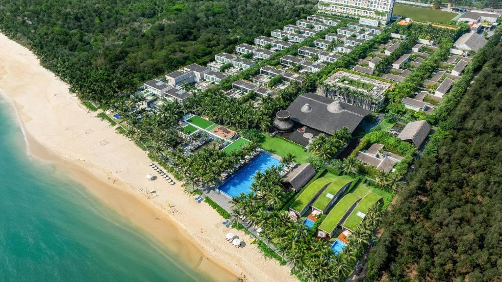

Quick answer: Phuket is bigger, more developed, and more expensive. Da Nang is quieter, cheaper, and less crowded - but also has less resort variety. For families wanting kids clubs, Phuket edges it. For value and an authentic city feel alongside the beach, Da Nang wins.
Destination Comparison · 2026
Da Nang vs Phuket: Which Beach Destination?
An honest comparison from someone who has spent time on both sides of this decision. Not a marketing comparison - an actual breakdown of what each destination does well.
Full Comparison Table
The headline numbers first, then the detail below.
| Category | Da Nang | Phuket |
|---|---|---|
| Daily budget (mid-range) | $80-140 | $130-220 |
| Beach quality | Excellent, long straight strand | Excellent, more variety |
| Crowds | Low-medium | High (peak season) |
| Resort variety | Good (15-20 notable properties) | Very high (100+) |
| Food scene | Excellent Vietnamese + growing international | Excellent Thai + international |
| Nightlife | Moderate - An Thuong strip, some rooftop bars | Major - Bangla Road, beach clubs |
| Families with young kids | Good | Very good (more kids clubs) |
| Couples | Excellent | Excellent |
| Digital nomads | Very good, lower cost | Good, higher cost |
| Best weather months | Feb-Aug | Nov-Apr |
| Flight access | Regional hub, growing international | Major international hub |
| Cultural depth | Hoi An 45 min, Hue 2.5 hrs | Limited on Phuket island itself |
| Infrastructure | Modern Vietnamese city - good | Well-developed tourist infrastructure |
Beaches Compared
Both destinations have legitimately good beaches. The differences are in character rather than quality.
Da Nang beaches
My Khe and Non Nuoc are the two main stretches. My Khe runs roughly 10 kilometres through the city - it is wide, clean, and has relatively gentle conditions during dry season. Non Nuoc, further south, is where the major resort complexes cluster. The sand is good, the water is clear from February through August. From November to February, swells increase and swimming is not always safe.
The downside: the beach is one long straight line. There is no visual drama - no headlands, no dramatic cliffs. It is an excellent flat beach, not a postcard beach.
Phuket beaches
Phuket's west coast has dramatically more variety. Kata and Karon are long and relatively uncrowded. Kamala is quieter and upmarket. Surin sits in front of expensive hotel territory. Patong is the most famous - busy, lively, and genuinely fun if that is what you want, exhausting if it is not. The Andaman Sea during dry season produces clear water with good visibility. The beach scenery, particularly around Kamala and Surin, is more visually impressive than Da Nang.
Verdict on beaches: Phuket has more variety and arguably more scenic appeal. Da Nang has a very good beach that is less crowded. If you want a long lazy beach day with fewer people, Da Nang wins. If you want beach variety across a trip, Phuket wins.


Costs Compared
Da Nang is consistently cheaper than Phuket - often by 25-40% for equivalent quality. This holds across accommodation, food, and activities.
| Item | Da Nang | Phuket |
|---|---|---|
| Budget guesthouse | $20-40/night | $35-65/night |
| 3-star beach hotel | $55-90/night | $90-150/night |
| 4-star resort | $90-160/night | $150-280/night |
| Luxury resort | $180-400/night | $280-700/night |
| Local lunch | $2-4 | $4-8 |
| Mid-range restaurant dinner | $15-30 for two | $30-60 for two |
| Beach cocktail | $4-7 | $8-14 |
| Airport taxi (city) | $8-12 | $20-35 |
| Day trip (boat/tour) | $20-50 | $40-100 |
The cost gap matters most at the mid-range level. If you are staying at a $500/night luxury villa, the difference is less significant. If you are trying to manage a $120/day total budget, Da Nang is where you stay in a nice hotel and eat well. In Phuket, $120/day means compromises.

Who Wins By Traveler Type
Families with young children
Phuket. The major resort complexes - Anantara Mai Khao, Club Med, Centara Grand Beach Resort - have genuinely developed kids clubs with full programming. Da Nang has family resorts (Furama, Premier Village, Vinpearl) with pools and kid-friendly setups, but the overall infrastructure for families - kids clubs, nanny services, dedicated shallow pools - is more developed in Phuket. If a well-run kids club is on your requirement list, Phuket has more options.
Couples
Even match. Da Nang has TIA Wellness, Naman Retreat, and Fusion Maia for spa-and-silence couples. Phuket has more options at every price point. Da Nang is cheaper. Both deliver a good couples trip. If budget matters, Da Nang. If you want the full luxury spectrum, Phuket has more runway.
Digital nomads
Da Nang. Lower cost of living, fast internet (fibre is widespread), a coworking scene concentrated in the An Thuong and Pham Van Dong area that is priced at Vietnamese rates, and a city that functions as a real city rather than a resort town. Phuket's coworking scene in Rawai and Nai Harn is decent but more expensive. For a stay of a month or more, Da Nang's cost advantage compounds significantly.
Party and nightlife
Phuket, clearly. Bangla Road in Patong is one of Asia's most active nightlife strips. Da Nang has a pleasant but modest bar scene - An Thuong Street for backpacker-adjacent drinking, a few rooftop bars, some beach clubs. If nightlife is a primary motivation, this is not a close comparison.
First-timers to Southeast Asia
Both work. Phuket has more English language saturation and more experience handling nervous first-time international visitors. Da Nang is a genuine Vietnamese city - slightly more cultural navigation required, but rewarding because of it. The bonus for Da Nang first-timers: Hoi An is 45 minutes away and delivers one of the most memorable experiences in Vietnam.
Ryan's Honest Take
Phuket is bigger, more developed, more expensive. Da Nang is quieter, cheaper, less crowded - but also less choice. For families with kids clubs, Phuket edges it. For value and an authentic city feel alongside the beach, Da Nang wins.
I spent time in Phuket before settling in Da Nang, and the honest comparison is this: Phuket has more. More hotels, more beaches, more nightlife, more activities. Da Nang has enough. And in travel, "enough" at significantly lower cost is often the better choice.
The thing most people miss about Da Nang: it is a real Vietnamese city of 1.3 million people that also has a great beach. Phuket is a resort island that also has a town on it. Those are fundamentally different experiences. If you want to feel embedded in a living city while having easy beach access, Da Nang is the pick. If you want a dedicated beach destination with maximum amenity, Phuket wins.
Verdict By Traveler Type

| Traveler type | Choose Da Nang if... | Choose Phuket if... |
|---|---|---|
| Budget traveler | Always - 30-40% cheaper overall | Budget is flexible |
| Families with kids clubs | Kids are older (10+) / self-sufficient | Kids need supervised programming |
| Couples, spa focus | TIA, Naman, Fusion Maia are world-class | Want more property variety |
| Digital nomads | Staying 2+ weeks, cost matters | Staying short-term, cost less critical |
| Nightlife | Low priority for you | High priority - Phuket wins clearly |
| Cultural depth | Hoi An nearby is a genuine bonus | Culture not a priority |
| First Southeast Asia trip | Want authenticity + beach | Want familiar tourist infrastructure |